Overview
VoltMX Foundry has multiple components, such as Identity, Integration, and Engagement Services. These features can be accessed through a common, centralized VoltMX Foundry Console. This document helps you install and configure VoltMX Foundry (Console, Identity Services, Integration Services, and Engagement Services) on Azure Cloud. For more information about VoltMX Foundry, refer to VoltMX Foundry User Guide.
VoltMX Foundry Containers on Azure Solution is designed to facilitate VoltMX Foundry on Azure for Non-Production and Production needs. This setup occurs with minimal manual intervention and leverages the following technologies:
- Docker - To package different components as portable container images (with all the required binaries and libs)
- Kubernetes - To orchestrate and maintain all these running containers. It will also have features like auto-scaling, secrets, deployment upgrades and rollbacks.
- Azure - For provisioning of the underlying infrastructure.
From Foundry V9 SP1 onwards, the installation involves a separate dedicated cluster for Integration, which will be referred to as the INT cluster. Whereas, the rest of the Foundry components will be present in a single cluster which will be referred to as the SHARED cluster.
- For versions V9 ServicePack 5 or later, containers for the Foundry components run on the Red Hat Universal Base Image (UBI).
- For versions V9 ServicePack 4 or earlier, containers for the Foundry components run on a Debian image.
There are two installation modes, Production and Non-Production. The Production mode is equipped to handle Production level traffic and Non-Production mode is for testing purposes.
During the installation you would be prompted to choose between the installation of a Production instance or a Non-Production instance. In general, for a given Azure subscription an organization installs one Production instance and multiple Non-Production instances (for example, dev, qa, uat, etc.).
- When you select a Non-Production instance, every time you run it to setup another environment such as qa, uat, etc., only the Integration (INT)cluster gets created again, while the rest of the Foundry components are shared for all the Non-Production instances within the subscription.
- When you select a Production instance, each installation is treated as a fresh installation where both the Shared cluster and the Integration cluster will be created again.
In case of a Non-Production setup the information about the shared resources which are required for installing the new environments is stored as installation metadata in Azure Cosmos DB and Azure Key Vault.
Salient Features
The VoltMX Foundry Containers on Azure Solution has the following features:
- Creates a multi-layer architecture along with the Application Gateway in a Virtual Network making it secure.
- Supports options to configure a custom DNS name, SSL cert support for secure communication, and includes Jumpbox for DevOps activities.
Overview for the Production and Non-Production Installations
Non-Production Mode
In a given Azure subscription, when you try to install a Non-Production instance, a complete VoltMX Foundry is created with both the clusters (Shared and Integration) for the first Non-Production installation. Subsequently, every time you run it to setup another non-production instance such as dev, qa, uat, etc., only the Integration (INT)cluster gets created again, while the rest of the Foundry components are shared for all the Non-Production instances within the same subscription. This integration instance is registered with the existing Foundry console created as part of the first installation.
Production Mode
When you setup an Production account each installation is treated as a fresh installation where both the Shared cluster and the Integration cluster will be created for every install.
Prerequisites
-
Azure Account - The setup script creates all the resources in this account. In your Azure subscription, your account should have the following permissions.
Azure Subscription Permissions
- Your account must have the role of an Owner.
- If your account has the role of a Contributor, you do not have adequate permissions. Contact your Azure Account Administrator for getting the required permissions.
Steps to check the permissions of your Azure subscription:
- In the Azure Portal, select your account from the upper right corner, and select Mypermissions.

- From the drop-down list, select Subscription. Select Click here to view complete access details for this subscription.

- View the roles assigned to you. In the following image, the user has the role of the Owner, which means that the user has adequate permissions.

Azure Active Directory Permissions
To check your Azure AD permissions:
- Select Azure Active Directory.

- In Azure Active Directory, select Overview and look at your user information. You should have the role of a Global Administrator to proceed further. If you do not have this role, contact your administrator to assign this role to you.
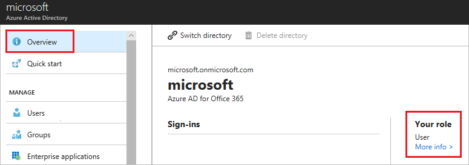
-
Prerequisite packages - The VoltMX Foundry Containers on Azure Solution does not need any additional software to be pre-installed, as the prerequisite packages are downloaded as a part of the setup scripts.
The packages that are installed as part of the install scripts are: azure-cli, kubectl, jq, and sponge.
To make sure that the script is able to download all the necessary software, you might need to open outbound connections to the respective sites. For more information, refer to the Appendices section of this document.
-
Generate an SSH Public Key Using the SSH protocol, you can connect and authenticate to remote servers and services. VoltMX Foundry setup expects an SSH key pair for authentication. The SSH public key is used for creating the Azure Virtual Machine, and for installing the VoltMX Foundry Setup. You need to specify the SSH Public Key in the properties file.
On Ubuntu terminal, use the
ssh-keygencommand to generate SSH public and private key files that are created by default in the~/.sshdirectory. This command can be executed from your local (Ubuntu) machine:ssh-keygen -t rsa -b 2048- This command is used to generate the SSH key pair using RSA encryption and a bit length of 2048. Name this key to be generated as id_rsa.You must create and configure a key pair as you need to provide them in the Configuration settings.
The SSH keys need to be placed in sshkeys folder.
You must leave the passphrase empty while generating the SSH key. VM logins are protected by other features such as the Google Authenticator.
-
Domain Name- You can have a Domain Name for the solution, which you can purchase from any third-party organizations, such as GoDaddy, and a proper DNS which you need to map to the public DNS of the Application Gateway. Refer to the Appendices section, for more details.
- SSL certs- To secure the communication, acquire the SSL certs (Azure Application Gateway requires certificates in .pfx format) and provide them during the Installation process. These SSL certs must be associated with the Domain Name that the user has procured. Refer to the Appendices section on SSL cert pfx format conversion.
- Place the SSL certificate (in a .pfx file format) in the ssl-cert folder, and then provide the Server Domain Name and AppGateway SSL Cert Password.
- For enabling HTTPS on the back-end of appgateway, perform the following steps:
- The SSL certificates with the cert data and key data should be in separate files (both in a .pem file format).
- Save the Cert file as
ingress.pem. - Save the Key file as
ingress_key.pem. - Place both ingress.pem and ingress_key.pem files in the certs folder of the installation directory.
It is recommended to use CA signed SSL cert to avoid any errors.
To execute the installation scripts, you must use Bash version 4 or later.
In case you are using Marketing Catalog Microservice or Campaign Microservice you can refer to their prerequisites mentioned ahead in the document.
VM Setup
You need an Azure Virtual Machine to download the artifacts, and execute the setup scripts from the VM to install VoltMX Foundry on Azure.
Follow these steps to create a VM through Azure Portal:
Click here to view the steps
- Login to the Azure Portal with the same account you configured for the role of the Global Administrator. Navigate to the Virtual Machines Tab.
Click on+Addbutton and select the Ubuntu Server image.
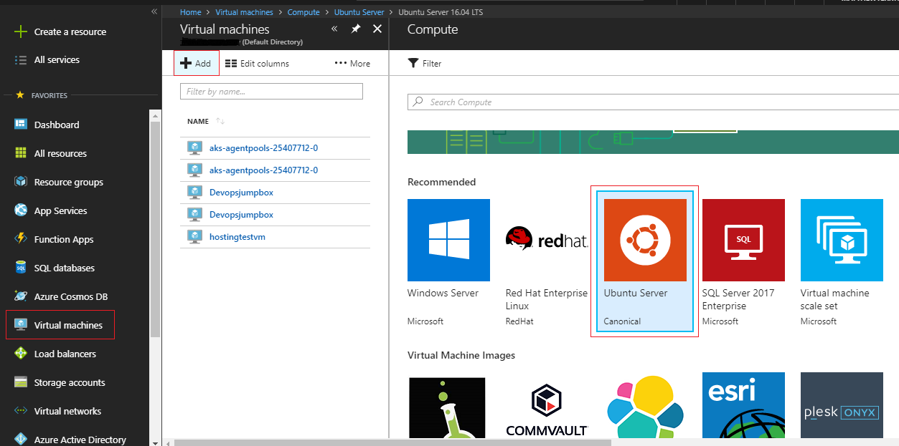 - Select Ubuntu Server 16.04 LTS image and click on Create.
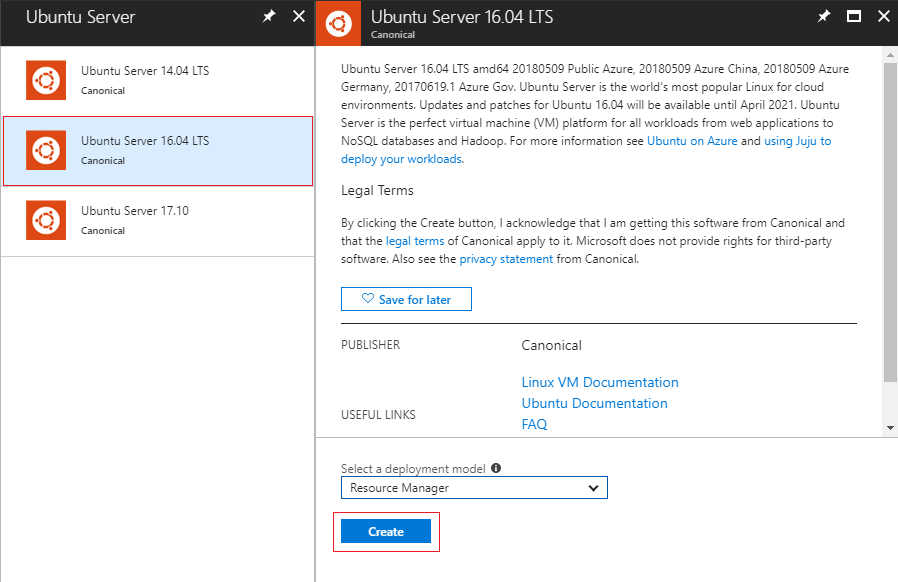 - Proceed with the remaining steps in the wizard and provide the SSH Public Key where needed.
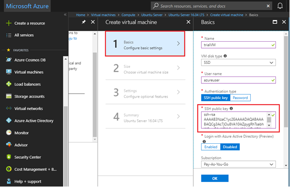
Pre-Installation Tasks
Steps to Install VoltMX Foundry on MS Azure:
Click here to view the steps
- Fetch the Public IP of the Virtual Machine from Azure Portal.
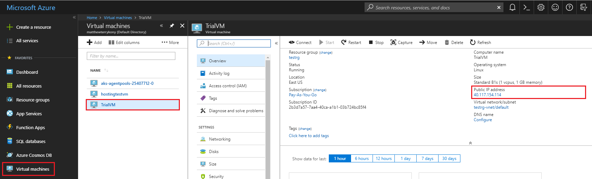
Login to the VM by executing the following command in the Terminal:
$ ssh azureuser@<public-ip> -i ~/.ssh/id_rsa -
Switch to the root user, install the unzip package for extracting contents, and download the
voltmx-foundry-containers-azure.zipfile:
$ sudo -s
$ apt-get install unzip
$ curl -o voltmx-foundry-containers-azure.zip -L voltmx-foundry-containers-azure_9.2.0.1_GA.zip -
Unzip the downloaded artifacts:
$ unzip voltmx-foundry-containers-azure.zip -d
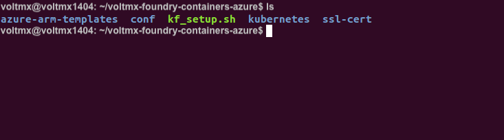
Configuration
Edit the input parameters in the following file based on the type of solution you want to create.
- <Installation Directory>/conf/enterprise.properties for Enterprise solution.
For more information, refer to the sample.properties (zip) file.
There are two types of input properties:
- User Defined Parameters: These are the mandatory inputs for which you must specify values.
- Advanced Properties: These are either populated by default or populated by the script during installation. Therefore, these generally do not need to be updated by you. These are available in the sample.properties (zip) file.
List of properties under the User Defined Section
You need to provide the following parameters during Installation:
None of the values for parameters in the properties file should contain quotes.
| PARAMETER | DESCRIPTION | EXAMPLE |
|---|---|---|
| AZURE_SUBSCRIPTION_ID | This is the Azure subscription ID. Steps to know this are in the next section. | da28307f-55ae-42de-995a-fcc6608d1bd4 |
| AZURE_LOCATION | The region in which the AKS cluster should be created. For more details refer to, Features and Supported Regions. | eastus |
| SERVICE_PRINCIPAL_CLIENT_ID | Application ID of the service principal created for the Azure installation. | 716f6434-1315-4acb-3184-d9a23efa3613 |
| SERVICE_PRINCIPAL_CLIENT_SECRET | Password of the Service Principal. | 34a10627-308d-4697-9ea2-e379f8e33bb0 |
| SERVICE_PRINCIPAL_OBJECT_ID | Service principal object ID. Steps to know this are in the next section. | c3afcb93-46ed-21c4-98e0-7bb639297f21 |
| TENANT_ID | Tenant ID of the Azure account. Steps to know this are in the next section. | a5a1f617-3b00-1e81-8190-c4a5136ba396 |
| SSH_PUBLIC_KEY | This is required for creation of the AKS. Steps to create SSH key is provided in the pre-requisites section.You cannot use the same SSH key for all the Non-Production installations within a subscription. | ssh-rsa SAAWB3NzaC1yc2... |
| DATABASE_TYPE | Specify the database type you want to use for hosting VoltMX Foundry on Azure.The VoltMX Foundry Containers on Azure Solution supports the MS SQL and MySQL Server Databases. | mysql |
| INTEGRATION_DATABASE_USER_NAME | Specify a username for your INT database. This is required only if the selected database is of the type sqlserver. This is not required in Non-Production installation if a shared cluster is already created in the previous installation. | dbclient |
| INTEGRATION_DATABASE_PASSWORD | Specify a database password for your integration database. This is required only if the selected database is of the type sqlserver. This is not required in Non-Production installation if a shared cluster is already created in the previous installation. If you are using VoltMX Foundry 9.0.0.1 GA docker images, you must specify the same value for SHARED_DATABASE_PASSWORD and INTEGRATION_DATABASE_PASSWORD. Integration docker image does not support multiple passwords.You can use different passwords for your databases from VoltMX Foundry V9.0.1.0 GA onwards. The following special character $, *, &, !, (, ), \ are not supported in DB password. | VolT^MX123 |
| ENVIRONMENT_DB_USER | Specify a username for your environment database. This is required only if the selected database is of the type mysql and the installation type is Non-Production. | dbclient |
| ENVIRONMENT_DB_PASSWORD | Specify a password for your environment database. This is required only if the selected database is of the type mysql and the installation type is Non-Production. | VolT^MX123 |
| ENABLE_REDIS_SSL | Specifies whether an SSL connection must be enabled between the Authentication Service and REDIS. | trueSupported values are true and false. |
| APPGATEWAY_SSL_CERT_PASSWORD | Password of the SSL PFX certificate.This is the Password is used for getting the pfx key for the SSL offloading. | Test@1234 |
| Automatic Registration Details: | Auto registration inputs are not required to be provided for Non-Production if the Shared cluster is already created in a previous installation. | |
| AUTO_REGISTRATION_USER_ID | The email ID used for VoltMX Foundry Registration. After the installation is complete, you can add more users from the Foundry console. | micheal.doe@xyz.com |
| AUTO_REGISTRATION_PASSWORD | The password used for VoltMX Foundry Registration. | Test@5264! |
| AUTO_REGISTRATION_FIRST_NAME | The first name used for VoltMX Foundry Registration. | Micheal |
| AUTO_REGISTRATION_LAST_NAME | The last name used for VoltMX Foundry Registration. | Doe |
| AZURE_CDN_ENABLED | Specify whether to install CDN for the apps component or not. If you have chosen a region where CDN Profile is not supported, CDN will not be configured. For more details refer to, Features and Supported Regions. | true Supported values include: true or false. |
| ALERT_NOTIFICATION_ENABLED | Specify whether to enable notification for Alerts. For example sending an alert when the CPU Usage crosses 90% on integration pod, etc. | true Supported values include: true or false. |
| AZURE_ACTION_GROUP_NAME | Specify name of the action group. | admin |
| USER_EMAIL_ID | Specify the default email ID to which alert notification should be sent. | micheal.doe@xyz.com |
| ARRAY_TO_WHITELIST_IPS_ TO_ACCESS_FILE_SHARE |
Specify the public Foundry IP of the machine where the installation script would be running. To specify multiple IPs use space separated values like ("w1.x1.y1.z1" "w2.x2.y2.z2" "w3.x3.y3.z3"). | ("103.140.124.130") |
| COMMON_RESOURCE_GROUP | Specify the name of the resource group where few subscription level shared resources would be created. This needs to be a separate value for Production and for Non-Production. This is the resource group under which PCI related function app gets created. | VoltMXInfra |
| MARKETING_CATALOG_MS | Specify whether to enable Marketing Catalog Microservice or not. | false Supported values include: true or false. |
| MARKETING_CATALOG_RESOURCE_GROUP | Specify the name of the resource group where the marketing catalog microservice resources would be created. | marketingcatalog-ms |
| MONGO_PATH | Enter the path where Mongo Shell is installed. | /opt/mongodb-linux-x86_64-ubuntu1804-4.2.10/bin |
| MONGO_CONNECTION | Enter the connection string for Mongo Shell from Altas. | mongodb+srv://mongo-cluster-1.jonig.mongodb.net |
| MONGO_USER_NAME | Enter the Mongo Database user name which has been created earlier by you. | mongodbuser |
| MONGO_PASSWORD | Enter the Mongo Database password which has been given by you while creating the mongodb user. | Root@123 |
| MONGODB_DBNAME | Enter the preferred Database name. | marketingcatalogdb |
| MONGODB_CONNECTIONSTR | Provide mongo DB connection string. | Ensure that you are providing URL encoded mongodb username and password values if they contain special characters like *,@,:,?,. etc. It can be formed by using the following string: mongodb:/<MONGO_USER_NAME>:<MONGO_PASSWORD>@<cluster-shard-0>:<port-number>, <cluster-shard-1>:<port-number>, <cluster-shard-2>:<port-number>/ <MONGODB_DBNAME>?ssl=true&replicaSet=<value> &authSource=admin &retryWrites=true &w=majority mongodb://mongodbuser:Root%40123@ mongo-cluster-1-shard-00-01.jonig.mongodb.net:27017, mongo-cluster-1-shard-00-02.jonig.mongodb.net:27017, mongo-cluster-1-shard-00-00.jonig.mongodb.net:27017/ marketingcatalogdb?ssl=true& replicaSet=atlas-qxcm8s-shard-0& authSource=admin& retryWrites=true& w=majority |
| EVENT_HUB_NAME_SPACE | Enter the preferred Event hub namespace. | marketingcatalogkafkaapp |
| CAMPAIGN_MS | ||
| Specify whether to enable Campaign Microservice or not. | false Supported values include: true or false. | |
| CAMPAIGN_RESOURCE_GROUP | Specify the name of the resource group where campaign microservice resources would be created. | nas-ssl-campaign |
| CAMPAIGN_DB_SERVER_NAME | Specify the server name for your MySQL Database. | sqlcampaigndb |
| CAMPAIGN_DB_USER_NAME | Enter the preferred Database username. | campaign |
| CAMPAIGN_DB_PASSWORD | Enter the preferred Database password.It should be a String containing a minimum of 8 characters and combination of alpha-numeric and non-alpha-numeric characters. | root@123 |
| ARRAY_TO_WHITELIST_IPS_ TO_ACCESS_CAMPAIGN_DB |
Specify the outbound public IP of the machine where the installation script would be running. To specify multiple IPs you can use space separated values like ("w1.x1.y1.z1" "w2.x2.y2.z2" "w3.x3.y3.z3"). | ("103.140.124.130") |
| New Relic Monitoring details: | New Relic Monitoring for AKS Cluster. Enable New Relic monitoring for Infrastructure monitoring. Make sure a proper new relic subscription is available before enabling this feature. | |
| NEW_RELIC_INFRA_MONITORING_ENABLED | Set to true if you have a new relic license key and if new relic infra monitoring needs to be enabled.This would monitor the node level performance metrics such as CPU, memory, etc. | true Supported values include: true or false. |
| NEW_RELIC_APP_PERF_MONITORING_ENABLED | Set to true if you have a new relic license and if pod level monitoring needs to be enabled.This would monitor the pod level metrics. | true Supported values include: true or false. |
| NEW_RELIC_LICENSE_KEY | Specify the new relic license key. | 9e3f3112fb39c130a75c407ab0b4ba153f30NRAL |
| AKS_NODE_COUNT | Specify the number of worker nodes in the cluster.This is the minimum number of nodes to be created in the Shared AKS agent pool. | 2 |
| AKS_MAX_NODE_COUNT | Specify the maximum number of worker nodes that can be provisioned by Autoscaling.The max number of nodes for the Shared AKS to create in case load increases. | 6 |
| AKS_MASTER_NODE_COUNT | This is the AKSMaster Node Count. Specify the number of Master nodes to create. | 1 |
| INTEGRATION_AKS_NODE_COUNT | The minimum number of nodes to be created in the Integration AKS agent/node pool. | 2 |
| INTEGRATION_AKS_MAX_NODE_COUNT | The maximum number of nodes to be created in the Integration AKS agent/node pool. | 6 |
User Defined Properties
-
Azure Subscription ID, Azure Service Principal ID Name, Azure Service Principal ID Secret, Service Principal Object ID, and Tenant ID - Azure Subscription ID is a GUID that uniquely identifies your subscription to use Azure services. The Application needs the Service Principal to access or configure resources through the Azure Resource Manager (ARM) in the Azure Stack.
You must have an Azure account with the permissions of a Global Administrator and the role of a User. Without these privileges, it is not possible to create the AKS clusters (or other resources).
The following section describes fetching Azure Subscription ID, generating Azure Service Principal ID Name, Azure Service Principal ID Secret, Service Principal Object ID, and Tenant ID. -
Click here for steps to get the Subscription ID
- Navigate to http://portal.azure.com/.
- Navigate to Browse.
- In the search box, begin to type subscription.
- Select Subscriptions from the search results.

Find the appropriate subscription to check your Azure subscription GUID.

-
Click here for step to generate Azure Service Principal with Contributor role at subscription level
Login to Azure Portal and click on Cloud Shell as shown:
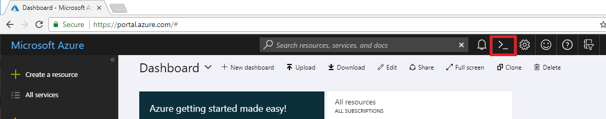
-
Execute:
$ az ad sp create-for-rbac --role="Contributor" --scopes="/subscriptions/<subscription_id>/resourceGroups/<resource_group_name>"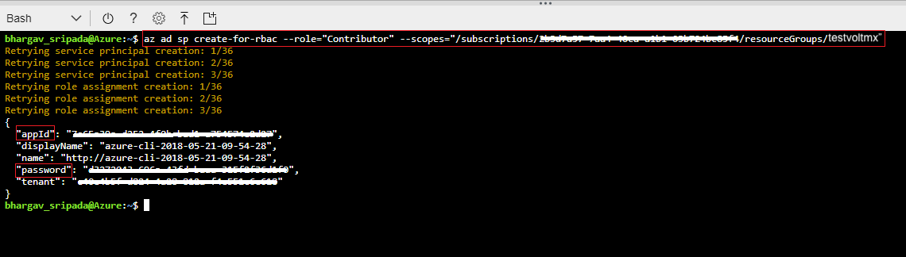 After executing the above command, a json response will be displayed on the command prompt.{ "appId": "APP_ID",
"displayName": "ServicePrincipalName",
"name": "http://ServicePrincipalName",
"password": ...,
"tenant": "XXXXXXXX-XXXX-XXXX-XXXX-XXXXXXXXXXXX"
} -
In the properties file of the conf directory:
- SERVICE_PRINCIPAL_CLIENT_ID is the value of the appId.
- SERVICE_PRINCIPAL_CLIENT_SECRET is the value of the password. The values of the SERVICE_PRINCIPAL_CLIENT_ID and SERVICE_PRINCIPAL_CLIENT_SECRET should not contain any quotation marks. For example:
- SERVICE_PRINCIPAL_CLIENT_ID = a5afa829-525c-436c-ca4f-f442027cfd2e
- SERVICE_PRINCIPAL_CLIENT_SECRET = cx4q44eq-fq7a-450v-zf41-4049183d1eb8
-
Generating Service Principal Object ID
Login to Azure Portal and click on Power Shell.- Execute:
$(Get-AzureADServicePrincipal -Filter "AppId eq <Service_principle_client_ID>").ObjectId
- Execute:
-
Tenant ID - Following are the steps to know your Tenant ID:
- Go to Portal.azure.com > Azure Active Directory.
- In the Overview section you can find the Tenant ID.

-
Installation
Steps to Install VoltMX Foundry on MS Azure
- Create an Ubuntu VM or you can use an existing VM. For more details, refer to VMSetup.
-
Extract the downloaded installation zip on that VM. For more details, refer to Pre-Installation Tasks.

-
Modify/Enter the required properties in the <Installation Directory>/conf/enterprise.properties file. For more details, refer to Configuration.
-
Run the installation using command bash install-foundry.sh.

-
Choose between a Non-Production or a Production installation mode. In the following prompt a Non-Production mode has been chosen. You can choose Production mode and follow a similar flow to complete the installation.
-
Specify a label for the Non-Production installation environment. A label is just a simple string such as dev, qa, uat etc., this will also be appended to the Azure resources created for this environment to identify them easily.

This step is specific to Non-Production mode.
-
The installation begins and towards the end of the installation the following prompt will be displayed.
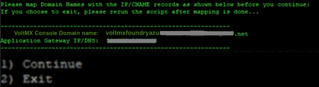
-
Once the domains are mapped to the IPs/CNAME as shown in the prompt, validate the mappings and continue the installation by re-running install-foundry.sh. The CDN configuration will be done and the following prompt will be displayed to complete the manual steps of CDN configuration.

You must ensure that the domain mapping must reflect with correct mapping from the script client box using nslookup.
-
As shown in the prompt, follow the steps in Setting up Azure Content Delivery Network (CDN) to perform a custom domain HTTPS configuration.
- Re-run the installation by running the install-foundry.sh again to complete the post-installation tasks.
-
At the end of the installation, the following message is displayed which contains the Foundry Console URL. Copy and paste the displayed link on to a browser. Press Enter. The Foundry Console is displayed.

Post Installation
After the installation and CDN configuration is complete, you can access the Foundry Console using the link displayed on the screen.
- Take a backup and keep the installation logs from
/logs directory . - Copy and paste the displayed link on to a browser. Press Enter. The Foundry Console is displayed.
-
Login with the registration credentials provided in the properties file and navigate across various pages. Following is a screenshot of the Environments tab from an Azure test setup after installing 3 environments, namely DEV, UAT2, and QA4.

You can now publish apps and check the runtime services.
Configuring Iris to Connect to VoltMX Foundry on Azure
For details about connecting to VoltMX Foundry Console through Iris, refer to Connecting to VoltMX Foundry.
Multiple Node Pools in Azure Kubernetes Service
In Azure Kubernetes Service (AKS), nodes that have the same configuration are grouped into node pools, which contain virtual machines that run your apps. To support apps that have different computing or storage requirements, you can use multiple node pools in a single cluster. This feature enables higher control over how you can create and manage multiple node pools.
Currently, the Foundry installation uses an AKS cluster with a single node pool to deploy applications. This single node pool contains all the application components such as identity, integration, console, vpns, and the api portal. For multiple environments, Foundry creates multiple AKS clusters with all the resources.
To optimize the effort of operating and maintaining multiple clusters, Foundry on Azure now uses the multi node pool architecture. In this architecture, multiple node pools are created in a single AKS Cluster. This AKS cluster contains a node pool named Shared, which contains components that are shared by all environments, such as console, identity, and the api portal. In addition to the shared components, every node pool in the cluster contains the vpns and integration components. An Ingress controller is configured to implement host-based routing to the respective node pool.
Updating the Azure Kubernetes Service Cluster configuration
You need to have the current config files if you want to update the AKS cluster configuration. Once the installation is complete, take a backup of the unzipped directory where you installed the voltmx-foundry-containers-azure.zip to perform further updates to the AKS clusters.
If you do not have a backup of the unzipped directory, updating the AKS cluster is difficult.
Setting up Azure Content Delivery Network (CDN)
A Content Delivery Network (CDN) is a distributed network of servers that can efficiently deliver web content to users. To minimize latency, CDNs store cached content on edge servers in Point-Of-Presence (POP) locations that are close to end users.
Azure Content Delivery Network (CDN) offers a global solution for developers to rapidly deliver high-bandwidth content to users by caching the content at strategically placed physical nodes across the world.
Azure CDN SKU for AKS cluster is set to Premium Verizon, which supports configuration of cache rules for VoltMX Foundry Apps.
Enable CDN on Azure AKS cluster
Follow these steps to enable CDN in your AKS cluster .
-
Set the value of
AZURE_CDN_ENABLEDto true in the properties file (trail.properties /enterprise.properties).
-
Set the CDN Endpoint:
-
FOR SSL ENABLED CLOUD (
IS_SSL_ENABLED = true), after creating the CDN endpoint, map the CDN endpoint to a custom domain name.
-
FOR SSL DISABLED CLOUD (IS_SSL_ENABLED = false), no mapping of server domain name is required.
Once you create the CDN profile and endpoint, follow these steps to manually configure the CDN settings in the Azure portal:
-
-
Open the Azure portal (portal.azure.com) and login using your Microsoft account credentials.

-
Select Resource groups from the left navigation pane.
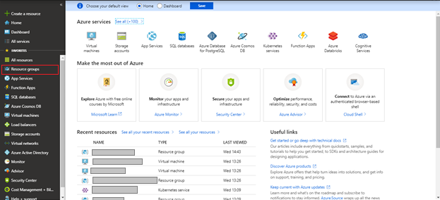
All existing resource groups appear.
Select the resource group in which the AKS Cluster is created.
-
If the cloud is SSL enabled, open CDN Endpoint from the list of resources in the Azure Resource Group.

-
Click Custom Domain.The Custom Domain page appears.
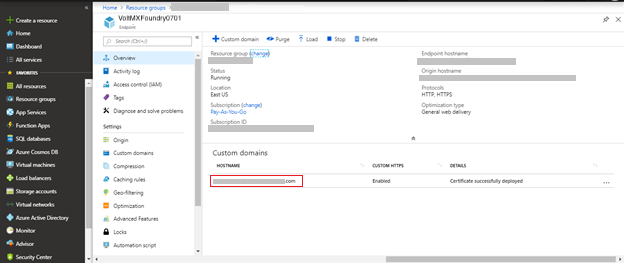
-
Select ON to enable HTTPS for custom domain.

Configuring Caching Rules
- Go to CDN profile from the list of resources available in the Azure Resource Group (having the created AKS cluster).

-
Click Manage from the top navigation bar.
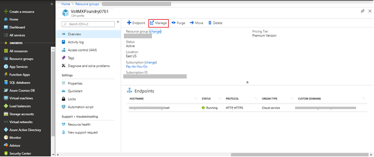
-
Configure all the rules in the CDN Manage Console.
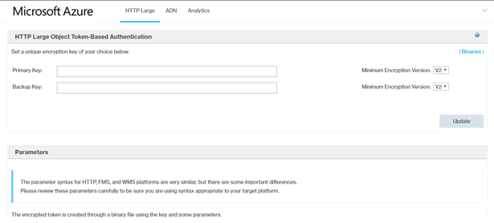
-
From the HTTPLarge list, select
cache settings -> query string caching.

- Select no-cache as the query string caching and click Update.

- From the HTTPLarge list, select Rules Engine.
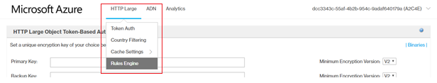 - Configure all the required rules.
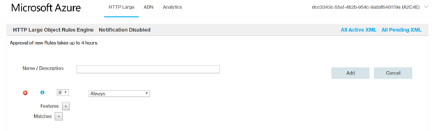- Rule 1

- Rule 2

- Rule 3

- Rule 4

- Rule 5

- Rule 6

- Rule 7

- Rule 8

- Rule 9

- Rules Order

- Rule 1
Configuring Clam AntiVirus for Azure Virtual Machines
Clam AntiVirus (ClamAV) is an open-source anti-virus software toolkit. You can choose to install ClamAV on Azure Virtual Machines in the kubernetes cluster. ClamAV is designed to be an on-demand scanner, and will only run when invoked to run.
A cron job is configured to run ClamAV on Azure Virtual Machines based on the frequency specified in the properties file. ClamAV scans all the files in the virtual machine and pushes the logs (clamscan.log and freshclam.log) present in /var/log/clamav directory to the clamavlogs container in the storage account of the Azure Resource Group in which the AKS cluster is created.
Provide the following inputs in the properties file to enable ClamAV.
Install ClamAV on Azure Virtual Machine
Follow these steps to install ClamAV on your Azure Virtual Machine:
- Set the value of
INSTALL_CLAMAVtotruein the properties file (trail.properties /enterprise.properties). - Place your SSH private key and SSH public key in the
sshkeysfolder with names id_rsa and id_rsa.pub respectively. - Set the frequency of the cron job to start the ClamAV scan and push the generated logs to the storage account.
Use the following format to set the values for the frequencies of clamscan_cron_schedule and clamscanlogpush_cron_schedule in the properties file (trail.properties /enterprise.properties).
* * * * *
| | | | |
| | | | |
| | | | +---- Day of the Week (range: 1-7, 1 standing for Monday)
| | | +------ Month of the Year (range: 1-12)
| | +-------- Day of the Month (range: 1-31)
| +---------- Hour (range: 0-23)
+------------ Minute (range: 0-59)
* = any value
For example, if you configure the crontab timing as 00 16 * * *, this indicates that the crontab runs every day at 16:00:00 (UTC).
- You must maintain a minimum gap of 02:30 hrs. between the
clamscan_cron_scheduleandclamscanlogpush_cron_schedule. - All cron job timings follow UTC timezone.
Access ClamAV logfiles in the Virtual Machine
Follow these steps to access the ClamAV logs in the Virtual Machine.
- Log on to Jumpbox using the following ssh command:
ssh devops@<Jumpbox_Public_IP_Address> - Log on to the Virtual Machine from Jumpbox using the following SSH command:
ssh -i id_rsa azureuser@<Virtual_Machine_IP_Address> - Using the following command, go to
/var/log/clamavdirectory:
cd /var/log/clamav
This directory contains the clamscan.log and freshclam.log files that are generated by ClamAV after scanning the Virtual Machine.
Another cron job is configured to push the generated logs into the Azure Storage Account.
Edit the cron job
-
Use the following command to view existing cron jobs on the VM.
crontab -l
-
Use the
crontab -ecommand to open the crontab list in edit mode.
Edit the ClamAV conf file
The freshclam.conf file configures the ClamAV Database Updater.
- Go to the
etc/clamav/directory. - Open the
freshclam.conffile in any editor to make any required changes to the conf file.
Accessing Logs in the Azure Storage Account
All the logs generated by CLAMAV are pushed to the Azure Storage Account.
-
Log on to the Azure portal (
[portal.azure.com](http://portal.azure.com/)) using your Microsoft account credentials.
-
Select Resource Groups from the left navigation pane.

All existing resource groups appear.
Select the resource group in which the AKS Cluster is created.
-
Select the storage account from the list of resources available in the resource group.
-
Click Blobs to see all the containers available in the storage account.

-
Select the clamavlogs container from the list of containers available in the storage account.
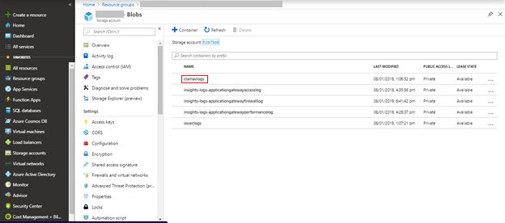
This shows all the log files pushed by ClamAV from the virtual machine.
-
Click Download to view the logs in the file.

-
Unzip the downloaded .zip file and extract the content.
You can now view all the logs that are pushed by CLAMAV from virtual machine.
Configuring OSSEC Intrusion Detection
OSSEC is an open source Host-based Intrusion Detection System (HIDS). It has a powerful correlation and analysis engine, and can perform integrating log analysis, file integrity checking, Windows registry monitoring, centralized policy enforcement, rootkit detection, real-time alerting, and active response.
OSSEC runs as a daemon process. It notifies through alert logs when intrusion attacks occur. These alert logs are pushed to the osseclogs container in the storage account in the Azure Resource Group in which AKS cluster is created.
Provide the following inputs in the properties file to enable OSSEC.
OSSEC Installation steps
-
Enable the
INSTALL_OSSECflag in the properties file (trial.properties /enterprise.properties):
-
As OSSEC is a daemon process, it continuously detects intrusion activities and stores alerts in
alerts.logfile. A cron job is configured to push the alerts from/var/ossec/logs/alerts/alerts.logto the Azure Storage Account.Configure the
cronjob osseclogpush_cron_schedulein the properties file (trail.properties /enterprise.properties) to set the frequency value of the cron job. Configure the Crontab timing in the following format:* * * * * | | | | | | | | | | | | | | +---- Day of the Week (range: 1-7, 1 standing for Monday) | | | +------ Month of the Year (range: 1-12) | | +-------- Day of the Month (range: 1-31) | +---------- Hour (range: 0-23) +------------ Minute (range: 0-59) * = any valueFor example, if you configure the crontab timing as 00 16 * * *, this indicates that the crontab runs every day at 16:00:00 (UTC).
- You can modify the default values of the cron job, if required.
- All cron job timings follow UTC timezone.
-
Place your SSH private key in the sshkeys folder with name id_rsa.
Access log files of OSSEC in Virtual Machine
Follow these steps to access OSSEC logs in the Virtual Machine.
-
Use the following SSH command to log on to Jumpbox
$ ssh devops@<Jumpbox_Public_IP_Address> -
Use the following SSH command, to log on to the Virtual Machine from the Jumpbox
$ ssh -i id_rsa azureuser@IPaddress of Virtual Machine -
Execute the following command to login as a root user.
$ sudo su -
You can view the syslogs at
/var/log/syslog.$cd /var/log/$cat syslog -
Logs created by OSSEC daemons are stored in the sub directories of
/var/ossec/logs.-
You can view the OSSEC logs at
/var/ossec/logs/ossec.log$cd /var/ossec/logs/$cat ossec.log -
You can view the OSSEC alerts at
/var/ossec/logs/alerts/alerts.log.$cd /var/ossec/logs/alerts/$cat alerts.log
-
Edit cron jobs
-
To view the existing cron jobs use the following command on VM.
$ crontab -l
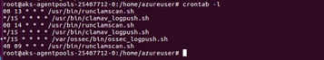
-
Use the
crontab -ecommand to open the crontab list in edit mode.
Accessing Logs in Azure Storage Account
All the logs generated by OSSEC are pushed to the Azure Storage Account.
-
Log on to the Azure portal (
[portal.azure.com](http://portal.azure.com/)) using your Microsoft account credentials..
-
Select Resource groups from the left navigation pane.

All existing resource groups appear.
Select the resource group in which the AKS Cluster is created.
-
Select the storage account from the list of resources available in the resource group.
-
Click Blobs to see all the containers available in the storage account.

-
Select the osseclogs container from the list of containers available in the storage account.

The page displays the log files pushed by OSSEC from Virtual Machine.
-
Click Download to view the logs file.

You can now view all the logs that are pushed by OSSEC from the virtual machine.
Follow these steps to edit the
preloaded-vars.conffile to give customized inputs (other than defaults) to install OSSEC.- Login to the specific Virtual Machine (node) using SSH keys in the terminal.
-
Go to the
/home/azureuser/ossec-hids-2.9.0/etc/directory by using following command.$ cd /home/azureuser/ossec-hids-2.9.0/etc/ -
Open the
preloaded-vars.conffile and edit as required.
Follow these steps to edit the
ossec.conf fileand change the existing configurations of OSSEC.- Login to the specific Virtual Machine (node) using SSH keys in the terminal.
-
Go to the
/var/ossec/etcdirectory using following command.$ cd /var/ossec/etc -
Open the ossec.conf file and edit as required.
Marketing Catalog Microservice
The Marketing Catalog Microservice is a comprehensive source of system-independent data of product details and marketing content crossing all the banks products, and capable of consuming products and services outside of the bank. Examples include products offered by FinTechs (such as payment devices) or real banking products that can be sold and marketed on behalf of other banks. Banks can choose to ingest the product details from the existing core or Product management system. This can be created and managed in the Marketing Catalog microservice.
Prerequisites
-
Run the installation on a fresh virtual machine.
If in case you execute the file on an existing virtual machine you must ensure the Java is not installed on it or pointing it to Java 8 is mandatory.
-
Create a cluster in your Atlas account and Allow access from anywhere in the IP access list which is present under Network Access. Then, create a database user for your cluster and connect it to your cluster. Refer to Get Started with Atlas for the exact procedure that needs to be followed to execute this step.
You must ensure allowing access from anywhere in the IP access list of the cluster. To do so you must login to your cluster and under Network Access go to IP Access List and then click on Edit and select Allow access from anywhere then save.

-
Install mongo shell of the same version as that of the cluster version. If your cluster version is 4.2.10 as shown in the following image then you must install mongo shell of version 4.2.10.

Deployment
- If you want to create the marketing catalog microservice resources along with the end to end installation of VoltMX Foundry on Azure cloud you must do the following:
- Provide the required inputs in the
conf/enterprise.propertiesfile. - Execute the
install-foundry.shfile.
- Provide the required inputs in the
- If you want to create only the marketing catalog microservice resources then do the following:
- Copy the
marketing_catalogsfolder fromVoltMXFoundryContainersAzure-_/lib/microservices/path. - Provide the required inputs in the
conf/ marketing_catalog_ms.propertiesfile. - Execute the
install_marketing_catalog_ms.shfile present under themarketing_catalogsfolder.
- Copy the
Campaign Microservice
The Campaign microservice allows the branch user to create and store Campaign definition details.
Prerequisite
- Run the installation on a fresh virtual machine.
If in case you execute the file on an existing virtual machine you must ensure the Java is not installed on it or pointing it to Java 8 is mandatory.
Deployment
- If you want to create Campaign microservice resources along with the end to end installation of VoltMX Foundry on Azure cloud you must do the following:
- Provide the required inputs in the
conf/enterprise.propertiesfile. - Execute the
install-foundry.shfile.
- Provide the required inputs in the
- If you want to create only the Campaign microservice resources then do the following:
- Copy the
campaignsfolder fromVoltMXFoundryContainersAzure-_/lib/microservices/path. - Provide the required inputs in the
conf/campaign_ms.propertiesfile. - Execute the
install_campaign_ms.shfile present undercampaignsfolder.
- Copy the